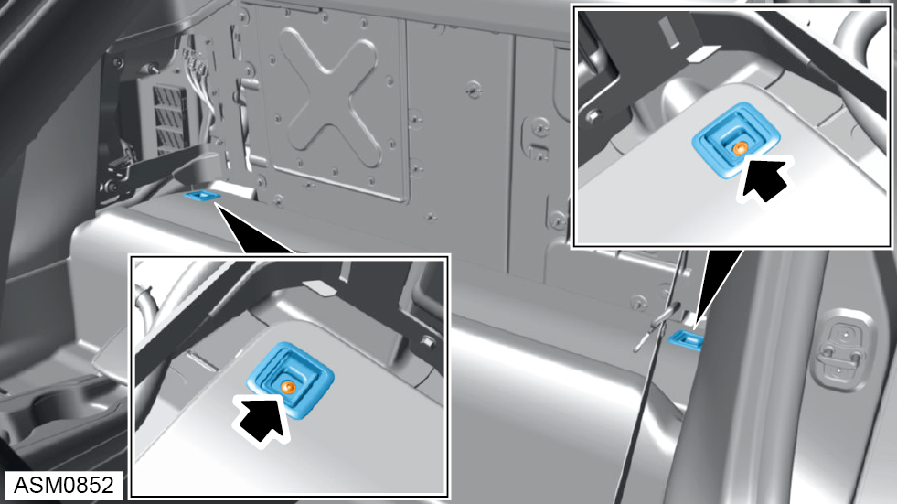
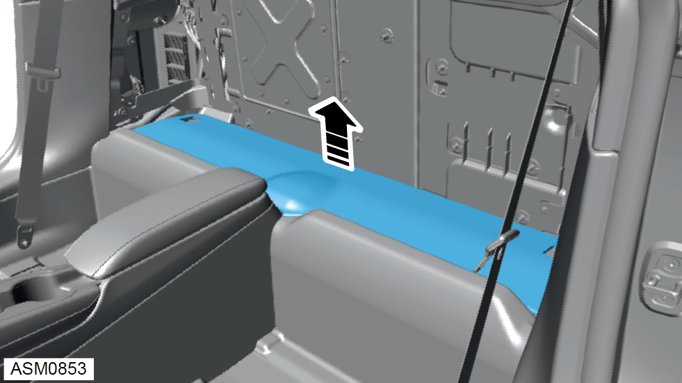
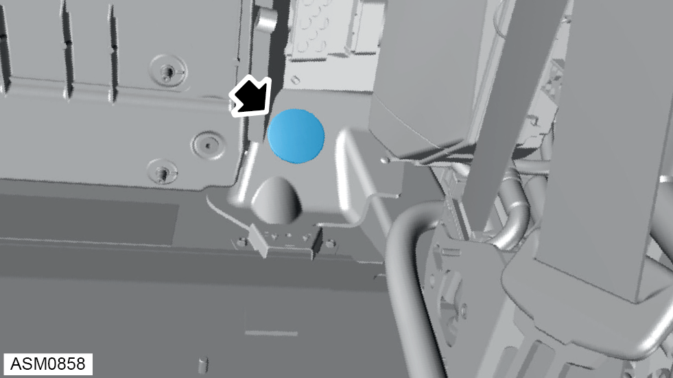
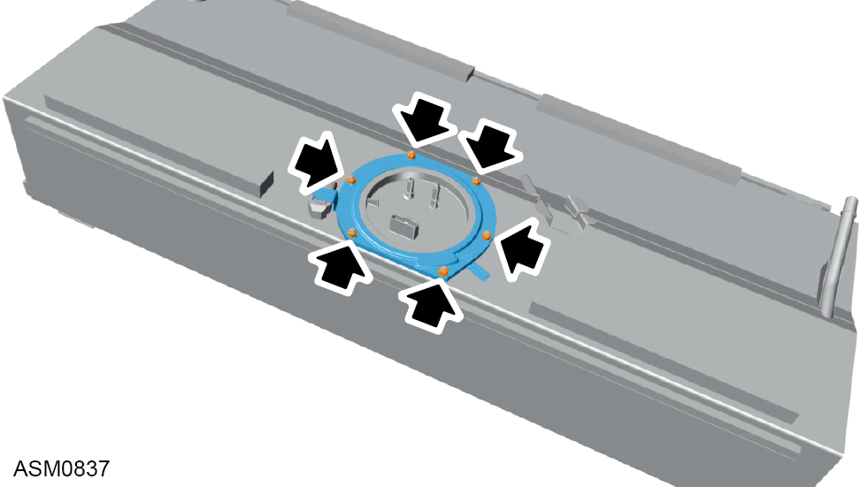

Fuel Tank
Print
Operation Code: 44.01.01-02
Removal
- Depressurise fuel system. Refer to procedure.
- Open fuel filler cap.
 WARNING: Before removing the fuel tank from the vehicle it must be drained.
WARNING: Before removing the fuel tank from the vehicle it must be drained.
- Using a siphon pump, drain fuel into a suitable sealed container.
WARNING: Fuel vapour is highly flammable and in confined spaces is also explosive and toxic. Always have a fire extinguisher containing FOAM, CO2, GAS or POWDER close at hand when handling or draining fuel.

- Remove M5x12 bolts (x2) securing luggage hooks to vehicle.
- Remove luggage hooks (x2).

- Remove fuel tank bay trim.
- Remove M6 nuts and washers (x4) securing carpet to vehicle. Torque 7 Nm.
- Pull away carpet (x2) to access fuel pump cover bolts.
- Remove M6x20 bolts (x4) securing fuel pump cover to vehicle. Torque 7 Nm.
- Remove fuel pump cover.
- Disconnect harness connectors (x2) from fuel pump.

- Remove grommet.
- Disconnect hose fitting from fuel tank.
NOTE: Be prepared to catch any excess fluid.
- Disconnect fuel outlet hose fitting.
NOTE: Be prepared to catch any excess fluid.
- Disengage clip securing shift cable to selector assembly.
- Remove shift cable from selector assembly.
- Remove M5 nut and washer securing cable to selector assembly. Torque 5 Nm.
NOTE: Always record quantity and fitted position of washers.
- Remove shift cable from selector assembly.
- Remove M8x30 bolts (x2) securing shift cable to bracket. Torque 16 Nm.
- Remove bracket from shift cable.
- Release shift cable from bracket.
- Release shift cable from clip.
- Remove rear bulkhead access panel. Refer to procedure.
- Remove M6 nut securing ground cable to vehicle. Torque 10 Nm.
- Remove ground cable.
- Remove rear wheel arch liner right side.
NOTE: Procedure is the same for left side component.
- Loosen hose clamp securing fuel filler pipe to fuel tank hose.
- Remove fuel filler pipe from fuel tank hose.
- Remove rear undertray. Refer to procedure.
- Remove fuel tank shear panel. Refer to procedure.
- Remove M6x25 bolts (x2) securing shift cable brackets (x2) to vehicle. Torque 10 Nm.
- Pull shift cables (x2) out of engine bay.
- Remove shift cables from adhesive strips on fuel tank.
- Using assistance support weight of fuel tank.
- Remove M8x25 bolts (x8) securing fuel tank mounting brackets (x2) to vehicle. Torque 24 Nm.
NOTE: Move shift cables aside so they do not interfere with the fuel tank.
- Remove fuel tank mounting brackets (x2).
- Using assistance remove fuel tank.
Do not carry out further disassembly if removing for access only.

- Remove M6 nyloc nuts and washers (x6) securing fuel pump locking ring to fuel tank.
 CAUTION: Apply a suitable lithium based lubricant such as Castrol Moly Grease to threads of the fuel pump retaining studs to prevent ‘Galling’.
CAUTION: Apply a suitable lithium based lubricant such as Castrol Moly Grease to threads of the fuel pump retaining studs to prevent ‘Galling’.
NOTE: Remove nuts in a diagonal sequence.
- Remove fuel pump locking ring.
- Remove fuel pump and sender unit from fuel tank.
NOTE: Tilt the fuel pump during removal to prevent the float from fouling on the fuel tank.
- Remove and discard fuel pump seal.
Installation
- Installation is reverse of removal procedure except for the following:
- Renew fuel pump seal.
- Inspect condition of foam pads before installation. Replace if necessary.
- Install original M6 nyloc nuts and washers (x6) securing fuel pump locking ring to fuel tank. Torque 2 Nm.
CAUTION: Apply a suitable lithium based lubricant such as Castrol Moly Grease to threads of the fuel pump retaining studs to prevent ‘Galling’.
CAUTION: Ensure clamp ring is flush against top of fuel pump flange.
NOTE: Install nuts in a diagonal sequence.
- Whilst using finger pressure to hold the fuel pump in position, remove and discard the original M6 nyloc nuts and washers (x6).
- Remove fuel pump locking ring and inspect fuel pump seal fitment.
NOTE: Continue using finger pressure to hold fuel pump in position.
- Install fuel pump locking ring.
NOTE: Continue using finger pressure to hold fuel pump in position.
- Install new nyloc nuts and washers (x6). Torque 2 Nm.
NOTE: Tighten nuts in a diagonal sequence.
NOTE: Continue using finger pressure to hold fuel pump in position.
- Apply a final tightening to nyloc nuts (x6). Torque 3 Nm.
CAUTION: Ensure clamp ring is flush against top of fuel pump flange.
NOTE: Tighten nuts in a diagonal sequence.